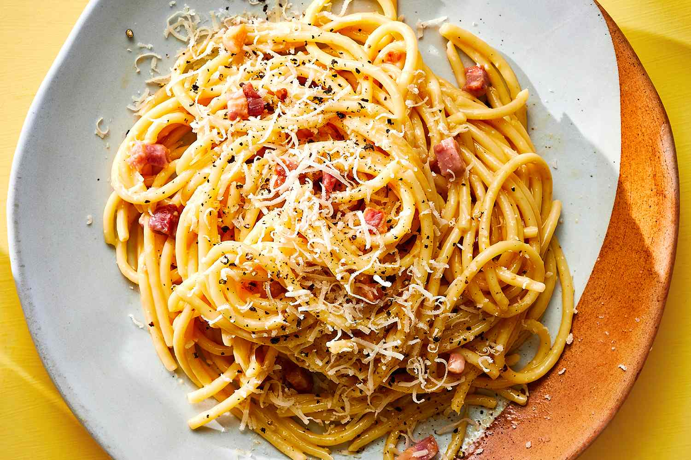

Carbonara

Description
Carbonara is a creamy-tasting pasta dish made with eggs, cheese, and meat. It is known for its rich flavor and simple ingredients. It is a delicious meal that can be prepared at home.
Ingredients
- 250 g spaghetti
- 2 eggs
- 1/2 cup grated cheese
- 100 g bacon
- 2 cloves garlic
- Salt
- Black pepper
Steps
- Boil water in a pot and cook the spaghetti until tender.
- Beat the eggs in a bowl and mix with the grated cheese.
- Cook the bacon in a pan until crispy.
- Add garlic and cook until fragrant.
- Add the cooked spaghetti to the pan and mix.
- Turn off the heat and add the egg and cheese mixture.
- Mix quickly until the sauce becomes creamy.
- Season with salt and black pepper, then serve.
Home